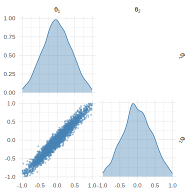
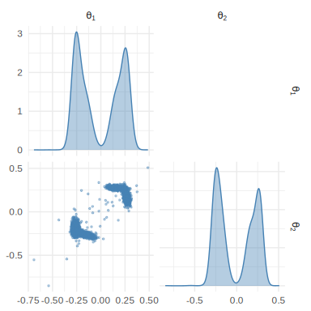
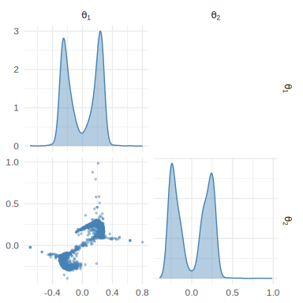

npe() approximates the posterior with a conditional
density estimator: a model of
trained on simulated
pairs. The density_estimator argument picks which one. The
choice matters most when the posterior is far from Gaussian, so that is
the case we use here.
The four estimators
"linear_gaussian" is a closed-form conditional Gaussian
fit by linear regression. No neural network and no torch.
It is exact when the posterior is Gaussian in the parameters, which
makes it both a fast baseline and a way to check that the neural
estimators are behaving.
"mdn" is a mixture density network. A small neural
network maps
to the weights, means and covariances of a Gaussian mixture. Mixtures
represent several modes and a good deal of skew, and they train
quickly.
"maf", the package default, is a masked autoregressive
flow (Papamakarios
et al., 2017). It builds the density from a sequence of invertible
transformations of a Gaussian. That handles strong nonlinear dependence
between parameters better than a mixture does, and Python
sbi defaults to it too.
"nsf" is a neural spline flow (Durkan et al.,
2019), a flow whose transformations are monotonic splines. It is the
most flexible of the three neural estimators, and the slowest to
train.
The three neural estimators need the torch back end
(install.packages("torch"); torch::install_torch()) and
share one training loop, so max_epochs,
patience, n_restarts and the rest of the
training arguments to npe() mean the same thing whichever
you pick.
A posterior no Gaussian can fit
task_two_moons() builds the two-moons benchmark, whose
posterior is bimodal and crescent-shaped:
library(neuralsbi)
#>
#> Attaching package: 'neuralsbi'
#> The following object is masked from 'package:base':
#>
#> sample
task <- task_two_moons()
task
#> <nsbi_task> two_moons: 2 parameters -> 2 data dims
x_obs <- c(0, 0)The linear-Gaussian estimator has no way to represent two modes. It returns one wide Gaussian spread across both of them:
fit_lg <- npe(task$prior, task$simulator, n_simulations = 2000,
density_estimator = "linear_gaussian", seed = 1)
draws_lg <- sample(posterior(fit_lg, x_obs = x_obs), 3000)
pairplot(draws_lg)
plot of chunk unnamed-chunk-3
The MDN has mixture components to spend, and it finds both moons:
fit_mdn <- npe(task$prior, task$simulator, n_simulations = 2000,
density_estimator = "mdn", n_components = 10,
max_epochs = 200, seed = 1)
draws_mdn <- sample(posterior(fit_mdn, x_obs = x_obs), 3000)
pairplot(draws_mdn)
plot of chunk unnamed-chunk-4
Now the spline flow, on the same 2000 simulations:
fit_nsf <- npe(task$prior, task$simulator, n_simulations = 2000,
density_estimator = "nsf", max_epochs = 150, seed = 1)
draws_nsf <- sample(posterior(fit_nsf, x_obs = x_obs), 3000)
pairplot(draws_nsf)
plot of chunk unnamed-chunk-5
Of the three, the spline flow renders the sharp crescent edges most cleanly.
Comparing estimators with a number
A classifier two-sample test (c2st()) measures how
distinguishable two sets of draws are. An accuracy of 0.5 means the
classifier cannot tell them apart; 1.0 means it always can. The MDN and
the flow agree, as they should, since both recovered the moons:
c2st(draws_mdn, draws_nsf, seed = 1)$accuracy # near 0.5: MDN and NSF agree
#> [1] 0.5098333The linear-Gaussian fit is one blob where there should be two
crescents, and yet c2st() gives it a pass:
c2st(draws_lg, draws_nsf, seed = 1)$accuracy # also near 0.5 (see below)
#> [1] 0.4936667That number is a trap, and it is worth knowing why.
c2st() trains a linear classifier, so it can only separate
samples by their mean and covariance. The two moons are symmetric about
the origin, so they share a centre and roughly a spread with the
Gaussian blob. No straight decision boundary can tell the two sets
apart, and the pairplots above show exactly the difference the score
misses.
A two-sample score is only as sharp as its classifier, and a linear
one is blind to multimodality. When you suspect that, trust the picture
or a calibration check (vignette("diagnostics")).
When two posteriors differ in mean or covariance, as an estimated and
an exact posterior do for task_gaussian_linear(), the
linear classifier picks the gap up and c2st() is the right
tool. That is how the package scores its own estimators against analytic
references in the tests.
Adjusting flexibility
Each estimator has a few settings, passed through npe(),
that control how flexible it is:
| Estimator | Arguments | Default |
|---|---|---|
"mdn" |
n_components, hidden
|
5 components, two hidden layers of 50 units |
"maf", "nsf"
|
n_transforms, hidden
|
5 transforms |
"linear_gaussian" |
none | none |
A more flexible model only helps if there are enough simulations to train it, and with a few thousand simulations the defaults are usually right. When the estimated posterior looks too smooth or too wide, more simulations tend to buy more than a bigger network.
What we do in practice
- Start with the default
"maf". It matches Pythonsbiand it handles strong nonlinear dependence between parameters."mdn"trains a little faster and represents multiple modes. - If the posterior has sharp features that the MAF or the MDN smooth
over, switch to
"nsf". - Use
"linear_gaussian"whentorchis unavailable, when you want a baseline in a second or two, or when the model really is linear-Gaussian, where it is exact. - Whichever you pick, check it before you quote an interval from it.
See also
vignette("diagnostics") shows how to verify a fitted
posterior with calibration and predictive checks. ?npe
documents every estimator argument, and
vignette("neuralsbi") is the short workflow tour if you
have not read it yet.